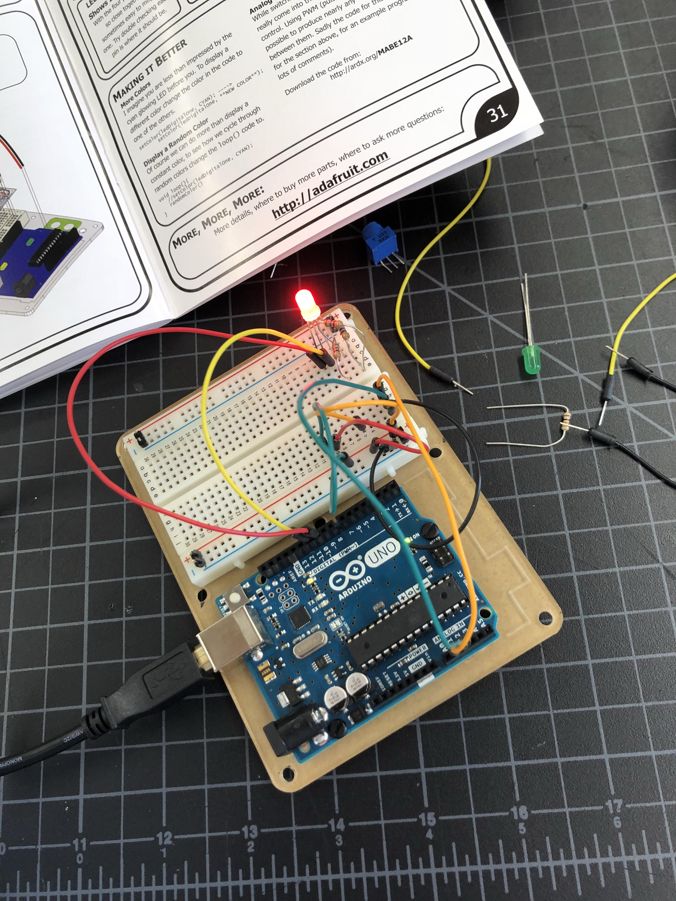
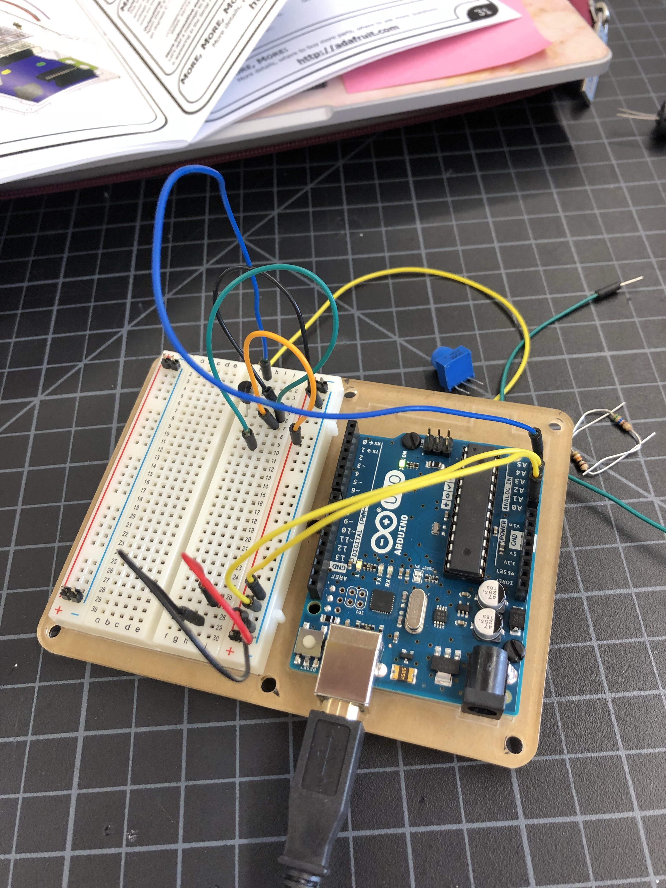
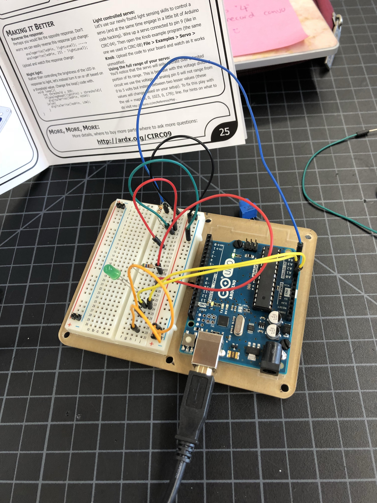
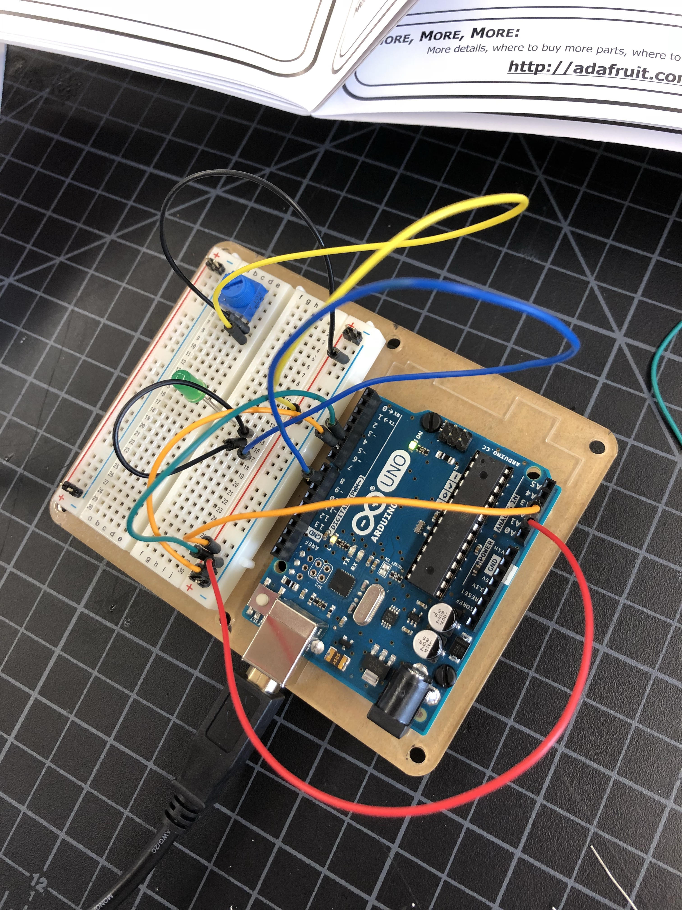
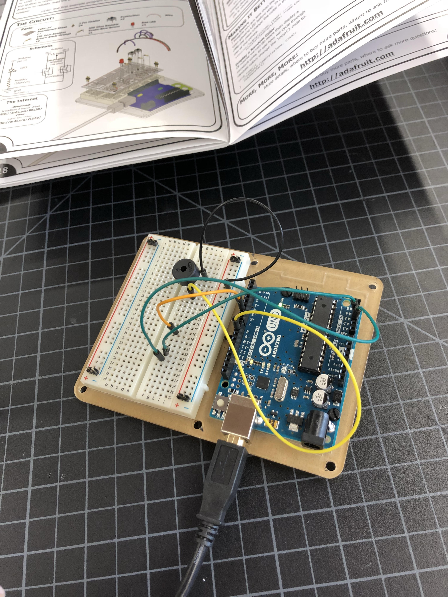
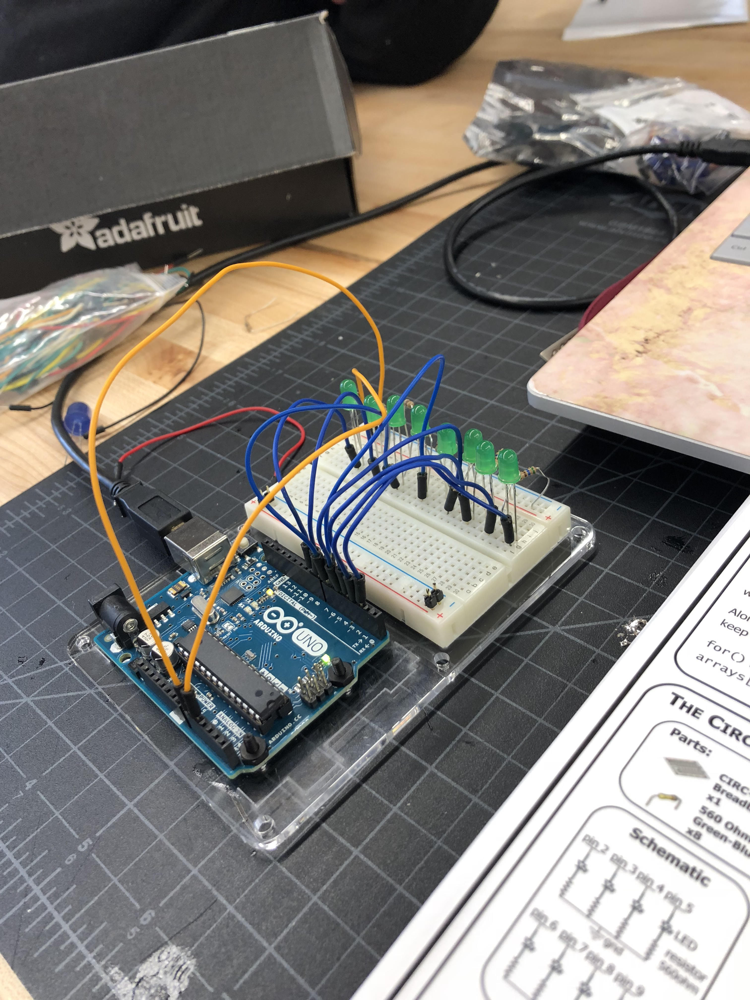

Index
Rotation 9: Arduino | Electronics
Project Description:
Arduino is a microcontroller platform that is easy to use for electronic projects. The Arduino requires a circuit board, pins, and wiring to connect electronics through its pins so you can control it however you want -- whether it's turning it off and on, or have the LED lights blink at a rapid pace, etc. The Arduinos that we used in class were roughly around 20 dollars. At first, it was very confusing because one single and tiny mistake, such as putting the needle in the wrong row, can cause an error for the Arduino to not work properly. However, as I did more and more projects, I began to be comfortable with using Arduino. Often times, I would find it difficult because one project would require so many wires that in the end the bread board is piled up with wires that are plugged at different places.





